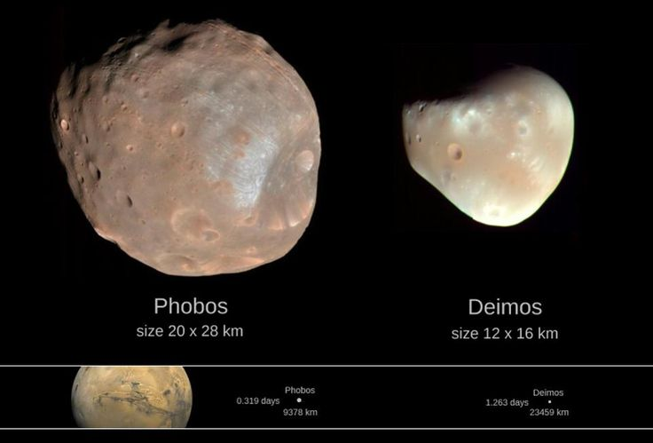
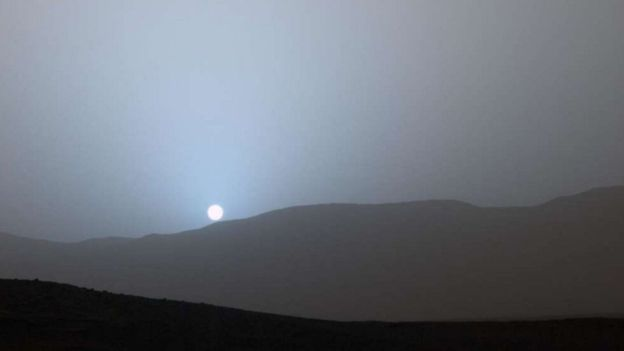

Marte já teve rios, lagos e possivelmente oceanos
Evidências geológicas sugerem que Marte já teve água líquida em abundância na superfície. Canais secos, deltas e minerais que se formam apenas na presença de água apontam para um passado mais úmido — talvez até com um grande oceano no hemisfério norte.
Um dia em Marte é parecido com um dia na Terra
Um dia solar marciano, chamado sol, tem aproximadamente 24 horas e 39 minutos. Isso faz de Marte um dos planetas com rotação mais semelhante à da Terra.
Marte tem as maiores formações geológicas do Sistema Solar
- O Monte Olimpo (Olympus Mons) é o maior vulcão e a montanha mais alta do Sistema Solar, com cerca de 22 km de altura.
- O Valles Marineris é um imenso sistema de cânions que se estende por mais de 4.000 km — cerca da largura dos Estados Unidos.


A atmosfera é fina e tóxica
A atmosfera marciana é composta principalmente por dióxido de carbono (CO₂), com traços de nitrogênio e argônio. É muito fina (menos de 1% da pressão atmosférica da Terra), tornando impossível a respiração sem equipamentos.
Marte tem duas luas muito pequenas
As luas Fobos e Deimos são corpos pequenos e irregulares, possivelmente asteroides capturados pela gravidade do planeta. Fobos, a maior das duas, está se aproximando de Marte e pode colidir com ele ou se despedaçar no futuro.
O céu de Marte pode ficar azulado ao pôr do sol
Diferente da Terra, onde o céu fica alaranjado ao entardecer, o céu marciano pode apresentar tons azulados ao pôr do sol, devido à dispersão da luz pelas partículas de poeira fina na atmosfera.
Missões a Marte enfrentam uma alta taxa de falhas
Marte é conhecido por sua dificuldade técnica: mais da metade das missões enviadas falharam. Isso lhe rendeu o apelido informal de "cemitério de sondas espaciais".
Marte pode ter abrigado vida microscópica
Pesquisas indicam que, no passado, as condições ambientais poderiam ter sido adequadas para formas de vida microbiana. Missões como a do rover Perseverance buscam por fósseis microscópicos ou sinais químicos de vida antiga.
Marte tem estações do ano
Devido à inclinação do seu eixo (aproximadamente 25°), Marte possui estações como a Terra. No entanto, cada estação dura quase o dobro do tempo devido à órbita mais longa (um ano marciano dura cerca de 687 dias terrestres).
Marte já foi observado como possível lar de "marcianos"
No século XIX, astrônomos interpretaram mal imagens de supostos “canais” artificiais na superfície, alimentando teorias sobre civilizações marcianas — algo que inspirou livros, filmes e até teorias de conspiração.